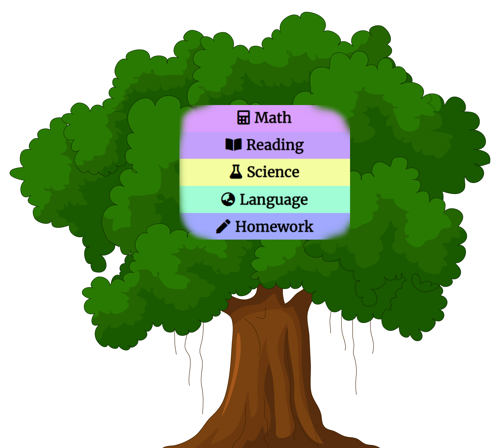

- Programs for ages 2-18
- One-on-one tutoring
- ACT/SAT Test Prep
Maximize your child's potential
"Brighter Minds....Brighter Future"
Bright Minds is an all-inclusive learning center, which aims to train children to become more confident, creative, and self-reliant learners, and to excel in all areas of studies and achieve higher goals